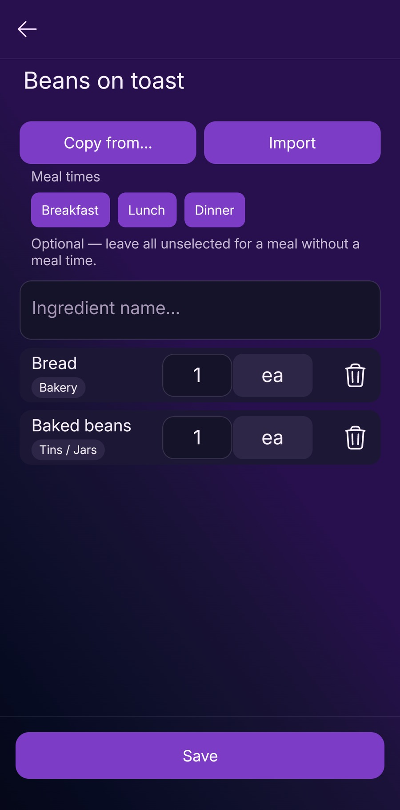
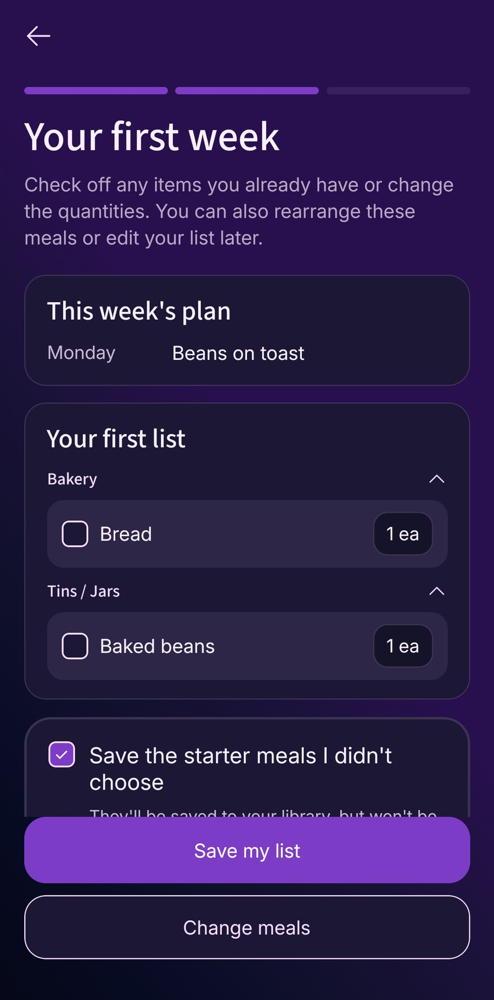

Start with one meal you already cook. Save its ingredients, put it in the week, then check the shopping list before adding the rest of your household shop. You can build up the other days once that first meal is working.
Before you start
Have Fameally installed and a familiar meal in mind. This guide covers the basic meal-planning and shopping-list features; check current plans and access if a feature is unavailable. Sharing a household needs Family access, but you can learn this routine on your own.
The meal and first-list screenshots were captured on Fameally 1.9.77, Android 14, on 9 November 2026. Menus and layout can differ in another version or on iPhone and iPad.
This walkthrough starts with New User on the welcome screen. If you already have an account, choose Sign in instead. You can add a meal through Library → Meals, then work on your plan through Planning; you do not need to repeat the welcome setup.
1. Save a familiar meal
For a small practice example, use Beans on toast. You only need bread and baked beans to see how ingredients move from a meal into your shop. Use your own quantities when you plan a real dinner.
- Choose New User on the welcome screen.
- On Add A Meal You Already Cook, choose Add My Own Meal. You can use Use Starter Meal if you would rather try an example supplied by the app.
- Enter Beans on toast in Meal name… and confirm the name with the tick or keyboard confirmation.
- Keep the form open to add ingredients before choosing Save.
You do not need to import a recipe or fill your whole library before planning. One meal gives you something useful to work with.
2. Add the ingredients you need to buy
- Tap Ingredient name… and enter Bread.
- Confirm the ingredient with the tick, then check that it appears as a row in the meal.
- Repeat for Baked beans.
- Review the quantities and units shown. Where those controls are available, set them to the amounts your household needs.
- Choose Save to keep the meal.
Keep ingredient names consistent when you reuse them in other meals. Matching ingredients and units can be combined on the food list; a similar name does not establish that two entries mean the same thing.
Check the result: after saving, the setup screen should show Beans on toast under Meals in your first list, with 2 ingredients. You can add another meal now, but one is enough for this example.

3. Preview your first week
- On Build Your First List, check that your meal is included.
- Choose Preview My List.
- On Your first week, check This week’s plan. The demonstration meal appears on Monday.
- If the selected meals need changing, use Change meals to return to the previous step.
The first preview gives you a starting point; you do not need to fill all seven days. You can rearrange meals later through Planning once setup is complete.
4. Check the ingredients on the food shopping list
- On the same preview screen, look under Your first list.
- Review the ingredients, grouped into categories. In this example, bread appears under Bakery and baked beans under Tins / Jars.
- Find bread and baked beans, then check the quantities against what you intend to cook.
- Look in the kitchen before buying. Adjust the shop for what you already have rather than treating the generated list as a stock check.
The preview lets you check off ingredients you already have or change their quantities. Review Save the starter meals I didn’t choose too: it controls whether those extra starter meals are kept in your library.

When the preview looks right, choose Save my list. New users are then asked to create an account to save the preview. Follow the account steps shown in the app and review the terms and privacy information before choosing your sign-up method. Once setup is complete, use Shopping for the list and Planning to adjust the week.
For current access and eligibility information, see Fameally’s plans. This walkthrough does not require choosing a paid subscription at the preview stage.
5. Add one household extra
Meal ingredients are only part of the shop. Add something that does not belong to your dinner, such as washing-up liquid.
- In Shopping, choose Cleaning. If your lists are combined, use the corresponding household section in that layout.
- Choose + to open Add Cleaning Item, then enter Washing-up liquid.
- Check Quantity and Unit Type, then choose Add.
- Check the item appears in the intended section with the quantity you need.
Your list can now cover the meal and an extra household need. Review it before the shop, and mark items as you collect them.
If something looks wrong
- My saved meal is not in the week.
- During welcome setup, check that the meal appears under Meals in your first list, then choose Preview My List. After setup, saving a meal in Library is separate from choosing it for a day through Planning.
- An ingredient is missing from the list.
- Check that the ingredient was confirmed as a row before you saved the meal. Use Change meals to review the selected meals in setup. In the main app, also check the week, meal selection and Shopping filter.
- The quantities do not match what I need.
- Check the meal’s quantities and units, repeated uses of the ingredient and the food you already have. Do not assume the app knows the contents of your cupboards.
- I cannot find a control shown here.
- Check your app version and available plan features. If you are in guided setup, follow its prompts before looking for the main tabs. You can contact support with the screen name, app version and device if you are still stuck.
Make the next meal easier
Add one more familiar meal and repeat the routine. For help deciding what goes where, read how to make a weekly plan you can adapt. Our guide to turning meal choices into a food shop explains the ingredient and cupboard checks in more detail.